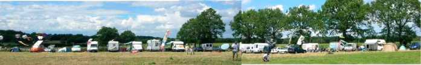
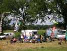
J'ai failli oublier, chars à cerf-volant, je n'en ai jamais vu autant, Pirates, Gwenn Ha Du et autres...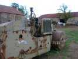
Le rouleau compresseur n'est pas là pour décorer, il a bien travaillé pour aplanir les allées, mais la boîte a rendu l'âme. Ca va pas être facile de trouver les pièces...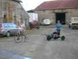
La ferme comprend plusieurs bâtiments dont le milieu est arrangé en salle d'accueil, la cour sert de terrain de jeux aux jeunes qui marient follement le petit-bi de Gaby au buggy !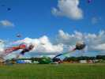
Les Awita sont là avec raie, pieuvre, poisson vert, mégabyte, nounours, deltas jaunes, et Lorane qui n'avait que 15 jours l'année dernière ! Avec la brise limitée, c'est un peu dur de décoller...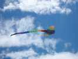
...mais dès que le vent soufflera, dans toute sa splendeur la raie repartira !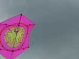
François Guzman a commis ce splendide rokkaku rose au dessin d'entrelacs. La nuit, il est même réflectorisé !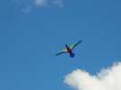
Josette fait voler un oiseau simple mais efficace...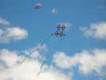
Et Joel fait voler son plus beau cerf-volant. Il sortira aussi son avion qui finira dans un arbre comme d'habitude...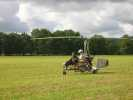
Mais le grand dada de là-bas est l'autogire. Trois, cette année, toutes neuves ou presque. Des patrouilles ont même été présentées et des baptèmes donnés, comme en montgolfière ou en hélico.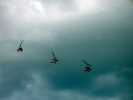
L'autogire, c'est comme un hélico, sauf que le rotor n'est entraîné que par le vent. Cela permet quand même de décoller en 50 m et de se poser quasiment sur place, même moteur coupé.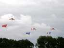
Pour le show final, passage avec ces drapeaux, largués ensuite !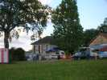
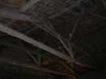
Et puis, rassemblement sous l'énorme charpente entièrement d'époque de la ferme qui a du abriter des tonnes de paille et de foin avant les cervolistes... Mais on n'est pas là pour admirer et certains gourmands ne lèveront même pas la tête !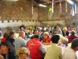
Et le dimanche soir, on mangera encore les restes sauf qu'on a juste refait un petit gratin dauphinois de peur de manquer...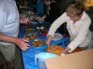
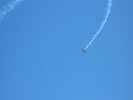
L'après-midi, l'Armée de l'Air participe avec un Cap qui commence relativement calme......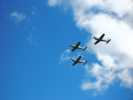
Et puis, la patrouille Cartouche Doré, en formation très serrée, mais aux figures plus... larges, c'est le moins qu'on puisse dire...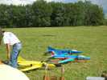
Des vols de maquettes aussi : les pulsoréacteurs, une vitesse incroyable et un bruit entendu à 5 km...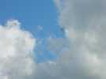
Et ils font des figures d'une ampleur inhabituelle pour des maquettes...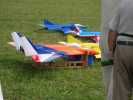
Il y a même un réacteur, un vrai mais tout petit ! Il vaut quand même à peu près le prix d'une Twingo, alors il ne volera que le samedi ayant cassé le train à l'atterro sur l'herbe.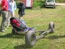
Il y a plein de buggies dont celui-ci qui se déplace latéralement, et est piloté en pointe-talon !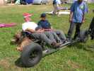
Ca a l'air cool comme position, mais la boule est reliée au siège et empêche d'être arraché quand ça tire, si on serre bien les cuisses, évidemment !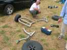
Ca se démonte évidemment en plusieurs morceaux. Un peu lourd sans doute, intérêt à voir sur le tas, en tout cas une belle réalisation mécanique.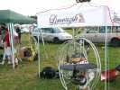
Les paramoteurs font aussi de la retape au sol, exhibant leurs moteurs légers.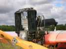
Les ULMs aussi, mais celui-là a une petite touche 1930 et une aérodynamique pas trop fine...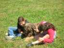
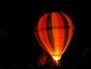
La nuit arrive, les montgolfières aussi. Trop de vent ce soir pour voler, mais on aura droit à un gonflage nocturne toujours aussi splendide, avec son et lumière.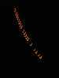
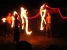
Les montgolfières affalées, on envoie tout le monde vers les arts du feu, plus qu'à ranger les cerfs-volants. D'abord on a les jongleurs lanceurs de torches...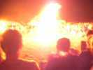
Puis des cracheurs de feu qui initient les spectateurs volontaires. Marc y laissera un bout de sa légendaire moustache, vite éteinte heureusement ! Il fallait quand même oser, Marc, bravo !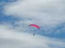
Le lendemain, c'est reparti, avec peu de vent. Les paramoteurs font des démonstrations, on aura même des largages de parachutistes par un Pilatus.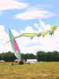
Les chars roulent peu, surtout le vrai char à voile, avec un mât et... une voile qui n'avance pas beaucoup dans ce petit temps. Ca se lèvera un peu dans la journée, pour retomber en fin d'après-midi.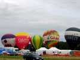
Aujourd'hui, avec ce zéphyr, les montgolfières pourront voler. D'abord à 6 h du matin, mais j'ai pas la photo (!), puis en fin d'après-midi...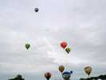
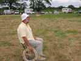
Ceci n'est pas un handicapé en fauteuil roulant, mais Sylvien avec son enrouleur en roue de vélo que la traction du CV ne suffit pas à soulever !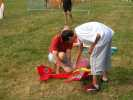
Quelques maquettes vont voler aussi, mais surtout se faire admirer en exposition statique, ce serait dommage de casser ce Fokker monoplan !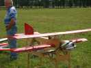
...ou ce biplan d'une splendide réalisation, manifestement fait pour l'expo, même s'il peut voler...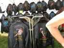
Des marchands de toutes sortes, dont un de blousons de vol, un peu chauds pour la saison, mais dans la stratosphère, faut assurer !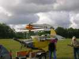
Beaucoup d'ULMs sont arrivés aujourd'hui, dont pas mal... par la route, comme ce pou-du-ciel pliant qui ne dépasse pas sa p'tite remorque, mais ne volera pas...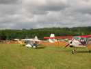
Le parc des ULMs s'étoffera tout au long de la journée...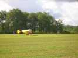
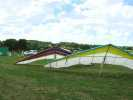
Il y aura aussi des deltaplanes, qui ne voleront pas vu la nature du terrain ! Mais on pourra faire du simulateur, suspendu à un portique et face à un grand écran !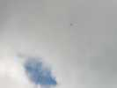
Un vrai planeur survolera le site, sans doute hors Estivol, et bien amené par le hasard !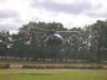
Mais l'hélico fera des rotations sans discontinuer et ne désemplira pas de volontaires pour des baptêmes de 15 mn.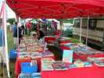
Plein de livres d'occasion sur l'aviation depuis ses débuts et un ou deux classiques sur le cerf-volant...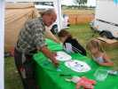
Un atelier de fabrication de cerfs-volants pour les enfants qui font la déco à leur gré.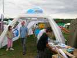
La FFVL est présente, avec des tentes gonflables, pour le vol libre mais la branche cerf-volant ne s'est pas déplacée...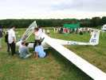
Un planeur moderne est aussi venu par la route dans sa remorque spéciale, pour montrer de près comment c'est fait !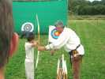
Il y avait même une initiation au tir à l'arc, très appréciée des enfants, avec des moniteurs sympas et paternels.